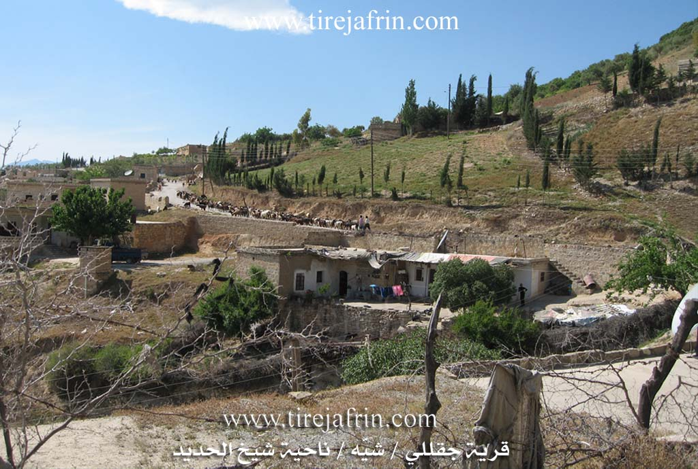

General Information
Nahiya (Subdistrict)
Şiyê
Also Known As
Al-Sa'ul, Ceqalo, Jiqallali Foqani, Xelê, Xelê، جقلا فوقاني، السهلية. تل الثعالب, Çaqalo, Çeqela, Çeqelê Jorin, Çeqelê Me'mikê, السعول, سعولجك, شيخ جقاللي, چقللي فوقاني, جقالو, جقاليه جورن
Tribes
Milli, Reşwan, Çeqela
Families, Clans, etc.
Bekir, Fîlê, Huseyn, Me'mo, Mistefa, Xoce

Photos



Basic Information about Çeqelê Jorin
Source: Ax û Welat (Information for Çeqelê Jêrin and Çeqelê Jorin)
Etymology: Named after the Çeqela tribe
Foundation Date/Period: Approximately 300 years ago
Wells: Bîra Xelîl Bekir
Summaries
I. Summary from TirejAfrin Site (English) of Çeqelê Jorin
Source: https://www.tirejafrin.com/site/kura%20afrin%20%20%20shiye%20-%20ceqele%20jorin.htm
Ceqel Me'mik Gundê Xelo Ceqelê Jorîn
According to the book جبل الكرد (عفرين) دراسة جغرافية Çiyayê Kurmênc (Efrîn): A Geographical Study by د. محمد عبدو علي Dr. Mihemed Ebdo Elî, the village is located 9km from the center. It has 1039 inhabitants, covers an area of 310 hectares, and sits at an altitude of 540m.
The first two names, Me'mik and Xelo, belong to people who inhabited the village in ancient times. The residents of the villages of Ceqellî Westa and Ceqellî Tehtanî originate from this village. It is also the highest in location relative to the two aforementioned villages.
It is a medium sized village located on the western slope of a limestone height. In the area, there are remains of carved stones dating back to the Roman era. There is an old water well that irrigates the village.
According to the book عفرين .... نهرها وروابيها الخضراء Efrîn... Her River and Her Green Hills by the writer عبدالرحمن محمد Ebdulrehman Mihemed from the village of Qetme, Ceqellî Jorîn is a village in Çiyayê Kurmênc, administratively belonging to the Şêx El Hedîd district, Efrîn region, Heleb governorate.
It is a small village located on the western slope of the mentioned mountain, and on a limestone height penetrated by a valley from the north to the west. It is bordered to the north by a high mountain chain planted with forest trees and olives, the TV broadcasting station, and the village of Me'mel Uşaxî. To the south lies the village of Şêx Ceqanlî. To the west lie a valley, a mountain height, and the village of Ceqanlî Tehtanî /Valley of Foxes/. To the east is a very high mountain chain and the village of Hec Bîlal.
A paved road is available that passes through the center to the town of Şêx El Hedîd and neighboring villages. The number of houses is 35, and the age of the village is approximately 250 years according to the accounts of the elderly in the village. As for its dwellings, they are of mud and stone with flat wooden roofs, while the modern ones are cement and spread around the public road.
The village drinks from rainwater collected in cisterns dug next to the houses. Its inhabitants work in rain fed agriculture (olives, walnuts, vines) alongside raising livestock. Its lands are mountainous and rugged, not very suitable for agriculture. An electricity network and telephone service have recently become available.
Among the families present in the village are: the Xoce family and the Me'mo family.
The village mukhtar is Cuma Betal Mihemed.
Sources:
- Book: جبل الكرد (عفرين) دراسة جغرافية Çiyayê Kurmênc (Efrîn): A Geographical Study by د. محمد عبدو علي Dr. Mihemed Ebdo Elî.
- Book: عفرين .... نهرها وروابيها الخضراء Efrîn... Her River and Her Green Hills by عبدالرحمن محمد Ebdulrehman Mihemed from the village of Qetme.
- Studies of Navenda Tirej Soft / Ebdulrehman Hacî Osman.
Preparation and execution:
- Manager of Tirej Afrin website: Ebdulrehman Hacî Osman
- 20/12/2013
II. Summary of Çeqelê Jêrin and Çeqelê Jorin from Ax û Welat
Source: https://www.youtube.com/watch?v=lsXnePr7HtQ
The village of Çeqela, located in the Efrîn region (specifically Çiyayê Kurmênc), is a historically significant settlement comprising three distinct sections: Çeqela Jorîn, Çeqela Jêr, and a third section implied by the "three Çeqelas" reference. The village derives its name from the Çeqela tribe, which serves as the primary kinship group in the area. According to local oral history, the Çeqela are a branch of the Milli tribal confederation, specifically linked to the Reşwan branch, who migrated from Bakurê Kurdistanê and the çiyayê Reşwan region.
The founding of the current settlement dates back approximately 300 years. The village origin story centers on two brothers, Mamoste Xelîl Bekir and Osmanê Xelîl Bekir, who migrated from Amed with a massive flock of 10,000 sheep. Arriving in a rugged, waterless terrain, their discovery of water was miraculous; a goat (k'erik) returned to the herd with a wet mouth, leading the shepherds to a hidden spring. Mamoste Xelîl Bekir sacrificed the goat as an offering and dug a well at the spot. This well, known as Bîra Xelîl Bekir, became the nucleus of the village. The residents note that an older well once existed but was sealed after an old woman fell into it.
The village has a deep connection to the geopolitical history of the Syria-Turkey border. Elders recount the era when Îngilîz and Fransa forces drew the borders (sînor), effectively separating the community from their kin in Bakurê Kurdistanê, where another village named Çeqela still exists near Qerexan. Residents describe the hardship under the French Mandate, including forced labor (şixre) and the requisitioning of grain. This era also saw resistance from the Mirûd, a group of Kurds who took up arms against the French forces in the village.
Socially, Çeqela is renowned for its emphasis on education and culture. The village boasts a high number of medical professionals and university graduates. It is the birthplace of several notable figures, including the politician Mihemed Bekir (known as Nîjû), the activist Ehmed Fîlê, and Kûçik Emer. In the realm of arts, Çeqela is celebrated as the home of the renowned artist Xelîl Xemgîn and the painter Adnan Huseyn. The Bekir family remains a prominent lineage, preserving the musical traditions passed down from elders like Apê Mihemed.
In recent times, the village has been impacted by regional conflict. Some residents, like Apê Omer, are displaced persons from Heleb who have returned to their ancestral lands, in some cases living in caves due to a lack of housing. The legacy of conflict is also visible in the stories of landmine survivors like Apê Semîr, who suffered injuries from mines laid in the open lands along the border. Despite these challenges, the community maintains a strong attachment to their land and history.
Transcriptions and Subtitles
| Source | Video | Subtitles | Transcript |
|---|---|---|---|
| Ax û Welat 1 | Watch Video | Download SRT | View Transcript |
Foundation/Origin Information of Çeqelê Jorin
The inhabitants of Çeqelê Ortê and Çeqelê Jêrin villages belong to this village.
Source: TirejAfrin Site
Founded by two nomadic pastoralist brothers from Amed (Diyarbakir), Mehmûdê and Usmanê Xelîl Bekir, after they discovered a well and qanat in the uninhabited wilderness.
Source: Ax û Walat Transcript
Possible Village Name Meaning of Çeqelê Jorin
The names "Me'mik" and "Xelo" are for people who lived there in ancient times.
Source: TirejAfrin Site
The name originates from the Çeqelî tribe, a branch of the larger Mîlan tribal confederation.
Source: Ax û Walat Transcript